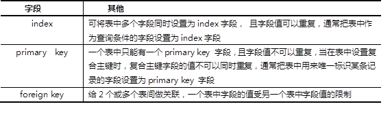

参考答案
索引的优点与缺点如下：
参考答案
表-1 索引类型
参考答案
在表中创建外键字段要满足以下条件：
修改后的表结构如图-1所示。
图-1
参考答案
mysql> alter table studentdb.stu_info add id int(3) auto_increment primary key first;
mysql> alter table stu_info add stu_num char(4) after id;
mysql> create unique index stu_num on stu_info(stu_num);
mysql> create index name on stu_info(name);
mysql> create index sex on stu_info(sex);
mysql> alter table stu_info
-> add birthday date,
-> add email varchar(50) not null;
mysql> alter table stu_info change pro zhuanye enum('java','uid','nsd') default "nsd";
参考答案
主要包括8个部分：
参考答案
1）客户端发出请求。
2）服务器端开辟线程响应客户端请求。
3）客户端发起sql语句查询数据库。
4）查询缓存：记录用户的sql查询语句，如果查询内容相同，直接从查询缓存回复。
5）如果缓存没有进入分析器。
6）分析器：分析用户命令语法是否正确，将用户的命令进行切片，一个词一个词用空格隔开，获得用户要查询的表、内容、用户的权限等。
7）优化器：执行路径的选择，生成执行树。（每个SQL语句都有很多执行路径，优化的目的就是在这些执行路径里选择最优的执行路径）。
8）存储引擎：用于管理存储的文件系统，不同的存储引擎有不同的功能和存储方式。